물류관리사-2교시 (2021-07-17 기출문제)
1과목: 보관하역론
1. 보관의 기능에 관한 설명으로 옳지 않은 것은?
- 시간적 효용을 창출한다.
- 운송과 배송을 원활하게 연계한다.
- 제품에 대한 장소적 효용을 창출한다.
- 생산의 평준화와 안정화를 지원한다.
- 재고를 보유하여 고객 수요에 대응한다.
(정답률: 알수없음)

2. 물류센터 입지 선정 단계에서 우선적으로 고려해야 할 사항이 아닌 것은?
- 지가(地價)
- 운송비
- 시장 규모
- 각종 법적 규제 사항
- 제품의 보관 위치 할당
(정답률: 알수없음)
3. 보관의 원칙에 관한 내용이다. ( )에 들어갈 알맞은 내용은?
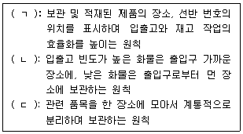
- ㄱ: 위치표시의 원칙, ㄴ: 형상 특성의 원칙, ㄷ: 네트워크보관의 원칙
- ㄱ: 선입선출의 원칙, ㄴ: 동일성ㆍ유사성의 원칙, ㄷ: 형상 특성의 원칙
- ㄱ: 위치표시의 원칙, ㄴ: 회전대응보관의 원칙, ㄷ: 네트워크보관의 원칙
- ㄱ: 선입선출의 원칙, ㄴ: 중량특성의 원칙, ㄷ: 위치표시의 원칙
- ㄱ: 회전대응보관의 원칙, ㄴ: 중량특성의 원칙, ㄷ: 선입선출의 원칙
(정답률: 알수없음)
4. 다음이 설명하는 물류센터 입지결정 방법은?
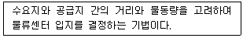
- 총비용 비교법
- 무게 중심법
- 비용편익분석법
- 브라운깁슨법
- 손익분기 도표법
(정답률: 알수없음)
5. 다음이 설명하는 물류시설은?
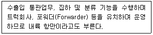
- ICD(Inland Container Depot)
- CY(Container Yard)
- 지정장치장
- 보세장치장
- CFS(Container Freight Station)
(정답률: 알수없음)
6. 복합화물터미널에 관한 설명으로 옳지 않은 것은?
- 마샬링(Marshalling) 기능과 선박의 양하 작업을 수행한다.
- 운송화물을 발송지 및 화주별로 혼재 처리하여 운송 효율을 높인다.
- 두 종류 이상의 운송수단을 연계하여 화물을 운송한다.
- 창고, 유통가공시설 등의 다양한 물류기능을 수행하는 시설이 있다.
- 운송수단 예약, 화물의 운행 및 도착 정보를 제공하는 화물정보센터로서의 역할을 한다.
(정답률: 알수없음)
7. 물류센터 건립 단계에 관한 설명으로 옳지 않은 것은?
- 입지분석단계: 지역분석, 시장분석, 정책 및 환경 분석, SWOT 분석을 수행한다.
- 기능분석단계: 취급 물품의 특성을 감안하여 물류센터기능을 분석한다.
- 투자효과분석단계: 시설 규모 및 운영 방식, 경제적 측면의 투자 타당성을 분석한다.
- 기본설계단계: 구체적인 레이아웃과 작업방식, 물류비용 정산방법을 설계한다.
- 시공운영단계: 토목과 건축 시공이 이루어지고 테스트와 보완 후 운영한다.
(정답률: 알수없음)
8. 물류센터를 설계할 때 고려할 요인을 모두 고른 것은?
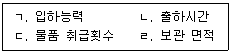
- ㄱ, ㄴ
- ㄱ, ㄷ
- ㄷ, ㄹ
- ㄴ, ㄷ, ㄹ
- ㄱ, ㄴ, ㄷ, ㄹ
(정답률: 알수없음)
9. 시중에서 유통되는 '콜라'의 물류특성(보관점수는 적고, 보관수량과 회전수는 많음)을 아래 그림의 보관유형으로 나타낼 때 순서대로 옳게 나타낸 것은?
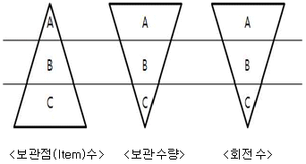
- A - A - A
- A - B - C
- C - A - A
- C - B – A
- C - C - C
(정답률: 알수없음)
10. 피킹 방식에 관한 설명으로 옳지 않은 것은?
- 디지털 피킹(Digital Picking): 피킹 물품을 전표없이 피킹하는 방식으로 다품종 소량, 다빈도 피킹작업에 효과적이다.
- 차량탑승피킹: 파렛트 단위로 피킹하는 유닛로드시스템(Unit Load System)이며, 피킹트럭에 탑승하여 피킹함으로써 보관시설의 공간활용도가 낮다.
- 존 피킹(Zone Picking): 여러 피커가 피킹 작업범위를 정해두고, 본인 담당구역의 물품을 골라서 피킹하는 방식이다.
- 일괄피킹: 여러 건의 주문을 모아서 일괄적으로 피킹하는 방식이다.
- 릴레이 피킹(Relay Picking): 피킹 전표에서 해당 피커가 담당하는 품목만을 피킹하고, 다음 피커에게 넘겨주는 방식이다.
(정답률: 알수없음)
11. 자동분류시스템에 관한 설명으로 옳지 않은 것은?
- 다이버터(Diverter) 방식은 팝업 방식에 비하여 구조가 상대적으로 복잡하다.
- 팝업(Pop-up) 방식은 여러 개의 롤러(Roller)나 휠(Wheel) 등을 이용하여 물품이 컨베이어의 특정 위치를 지나갈 때 그 물품을 들어 올려서 방향을 바꾸는 방식이다.
- 다이버터(Diverter) 방식은 다이버터를 사용하여 물품이 이동할 때 가로막아 방향을 바꾸는 방식이다.
- 트레이(Tray) 방식은 분류해야 할 물품이 담긴 트레이를 기울여서 물품의 위치를 아래로 떨어트리는 방식이다.
- 슬라이딩슈(Sliding Shoe) 방식은 트레이 방식에 비하여 물품의 전환 흐름이 부드러워 상대적으로 물품의 손상 가능성이 낮다.
(정답률: 알수없음)
12. 컨테이너터미널 운영방식에 관한 설명으로 옳은 것을 모두 고른 것은?
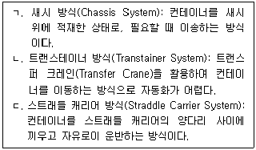
- ㄱ
- ㄴ
- ㄱ, ㄴ
- ㄱ, ㄷ
- ㄱ, ㄴ, ㄷ
(정답률: 알수없음)
13. 자동창고(AS/RS)에 관한 설명으로 옳은 것은?
- 스태커 크레인(Stacker Crane): 창고의 통로 공간을 수평 방향으로만 움직이는 저장/반출 기기이다.
- 단일명령(Single Command) 방식: 1회 운행으로 저장과 반출 작업을 동시에 수행하는 방식이다.
- 이중명령(Dual Command) 방식: 2회 운행으로 저장과 반출 작업을 순차적으로 모두 수행하는 방식이다.
- 임의위치저장(Randomized Storage) 방식: 물품의 입출고 빈도에 상관없이 저장위치를 임의로 결정하는 방식이다.
- 지정위치저장(Dedicated Storage) 방식: 물품의 입출고 빈도를 기준으로 저장위치를 등급(Class)으로 나누고 등급별로 저장위치를 결정하는 방식이다.
(정답률: 알수없음)
14. 물류센터의 기능을 모두 고른 것은?
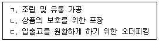
- ㄱ
- ㄴ
- ㄱ, ㄴ
- ㄴ, ㄷ
- ㄱ, ㄴ, ㄷ
(정답률: 알수없음)
15. 창고관리시스템(WMS)을 자체 개발이 아닌, 기성제품(패키지)을 구매할 경우 고려해야 할 요인이 아닌 것은?
- 커스터마이징(customizing) 용이성
- 기성제품(패키지)의 개발 배경
- 초기투자비용
- 기존 자사 물류정보시스템과의 연계성
- 유지보수비용
(정답률: 알수없음)
16. 수요지에 제품을 공급하기 위한 물류센터와 각 수요지의 위치 좌표(x, y), 그리고 일별 배송횟수가 다음의 표와 같이 주어져 있다. 물류센터와 수요지간 일별 총이동거리를 계산한 결과는? (단, 이동거리는 직각거리(rectilinear distance)로 계산한다.)
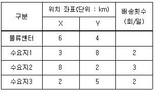
- 28 km
- 36 km
- 38 km
- 42 km
- 46 km
(정답률: 알수없음)
17. 랙(Rack)에 관한 설명으로 옳지 않은 것은?
- 드라이버스루랙(Drive-through Rack): 지게차가 랙의 한 방향으로 진입해서 반대방향으로 퇴출할 수 있는 랙이다.
- 캔틸레버랙(Cantilever Rack): 긴 철재나 목재의 보관에 효율적인 랙이다.
- 적층랙(Mazzanine Rack): 천정이 높은 창고의 공간 활용도를 높이기 위한 복층구조의 랙이다.
- 실렉티브랙(Selective Rack): 경량 다품종 물품의 입출고에 적합한 수평 또는 수직의 회전랙이다.
- 플로우랙(Flow Rack): 적입과 인출이 반대 방향에서 이루어지는 선입선출이 효율적인 랙이다.
(정답률: 알수없음)
18. 컨테이너터미널의 시설에 관한 설명으로 옳지 않은 것은?
- CFS(Container Freight Station): LCL화물의 적입(Stuffing)과 FCL화물의 분리(Stripping) 작업을 할 수 있는 시설이다.
- 선석(Berth): 컨테이너 선박이 접안할 수 있는 시설이다.
- 에이프런(Apron): 야드트럭이 하역작업을 하거나 컨테이너크레인이 주행할 수 있도록 안벽을 따라 일정한 폭으로 포장된 공간이다.
- 마샬링야드(Marshalling Yard): 컨테이너의 자체검사, 보수, 사용 전후 청소 등을 수행하는 공간이다.
- 컨트롤센터(Control Center): 본선 하역작업이나 야드의 컨테이너 배치를 계획하고 통제 감독하는 시설이다.
(정답률: 알수없음)
19. 항공운송에서 사용되는 하역장비에 관한 설명으로 옳지 않은 것은?
- 리프트로더(Lift Loader): 파렛트를 항공기 적재공간 밑바닥 높이까지 들어 올려 기내에 탑재하기 위한 기기이다.
- 소터(Sorter): 비교적 소형화물을 행선지별, 인도지별로 구분하는 장치로서 통상 컨베이어와 제어장치 등으로 구성된다.
- 돌리(Dolly): 파렛트를 운반하기 위한 차대로서 자체 기동력은 없고 Tug Car에 연결되어 사용된다.
- 트랜스포터(Transporter): 항공기에서 내린 ULD(Unit Load Device)를 터미널까지 수평 이동하는데 사용하는 장비이다.
- 컨투어게이지(Contour Gauge): 파렛트에 적재가 끝난 후 적재된 파렛트의 무게를 계량하기 위하여 트레일러에 조립시켜 놓은 장치이다.
(정답률: 알수없음)
20. 생수를 판매하는 P사는 지수평활법을 이용하여 8월 판매량을 55,400 병으로 예측하였으나, 실제 판매량은 56,900 병이었다. 지수평활법에 의한 9월의 생수 판매량 예측치는? (단, 평활상수(α)는 0.6을 적용한다.)
- 54,200병
- 54,900 병
- 55,400병
- 55,800병
- 56,300병
(정답률: 알수없음)
21. S업체는 경제적주문량(EOQ: Economic Order Quantity)모형을 이용하여 발주량을 결정하고자 한다. 아래와 같이 연간 수요량이 60 % 증가하고, 연간 단위당 재고유지비용이 20 % 감소한다고 할 때, 증감하기 전과 비교하여 EOQ는 얼마나 변동되는가? (단, √2 = 1.414, √3 = 1.732, √5 = 2.236 이며, 계산한 값은 소수점 첫째자리에서 반올림한다.)
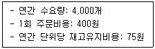
- 14 % 증가
- 24 % 증가
- 41 % 증가
- 73 % 증가
- 124 % 증가
(정답률: 알수없음)
22. 다음은 L사의 연도별 휴대전화 판매량을 나타낸 것이다. 2021년 휴대전화 수요를 예측한 값으로 옳은 것은? (단, 단순이동평균법의 경우 이동기간(n)은 3년 적용, 가중이동평균법의 경우 가중치는 최근 연도로부터 0.5, 0.3, 0.2 을 적용, 지수평활법의 경우 평활상수(α)는 0.4를 적용, 모든 예측치는 소수점 둘째자리에서 반올림한다.)
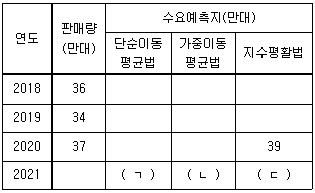
- ㄱ: 32.7, ㄴ: 34.4, ㄷ: 38.2
- ㄱ: 34.9, ㄴ: 34.4, ㄷ: 37.2
- ㄱ: 35.7, ㄴ: 34.9, ㄷ: 38.2
- ㄱ: 35.7, ㄴ: 35.9, ㄷ: 36.9
- ㄱ: 35.7, ㄴ: 35.9, ㄷ: 38.2
(정답률: 알수없음)
23. 구매방식에 관한 설명으로 옳은 것은?
- 분산구매방식은 본사의 공통품목을 일괄적으로 구매하기에 적합하다.
- 집중구매방식은 분산구매방식보다 사업장별 독립적 구매가 가능하다.
- 분산구매방식은 구매량에 따라 가격차가 큰 품목의 대량 구매에 적합하다.
- 집중구매방식은 수요량이 많은 품목에 적합하다.
- 분산구매방식은 집중구매방식 보다 대량 구매가 이루어지기 때문에 가격 및 거래조건이 유리하다.
(정답률: 알수없음)
24. 채찍효과(Bullwhip Effect)의 해소 방안이 아닌 것은?
- 리드타임을 길게 설정
- 공급사슬 주체 간 실시간 정보공유
- VMI(Vendor Managed Inventory)의 사용
- EDLP(Every Day Low Pricing)의 적용
- 협력계획, 예측 및 보충(CPFR: Collaborative Planning, Forecasting, and Replenishment)의 적용
(정답률: 알수없음)
25. 재고관리의 장점이 아닌 것은?
- 실제 재고량 파악
- 불확실성에 대한 대비
- 상품 공급의 지연(delay)
- 가용 제품 확대를 통한 고객서비스 달성
- 수요와 공급의 변동성 대응
(정답률: 알수없음)
26. 포장의 원칙이 아닌 것은?
- 표준화의 원칙
- 통로대면의 원칙
- 재질 변경의 원칙
- 단위화의 원칙
- 집중화의 원칙
(정답률: 알수없음)
27. JIT(Just In Time) 시스템에 관한 설명으로 옳은 것은?
- 한 작업자에게 업무가 할당되는 단일 기능공 양성이 필수적이다.
- 효과적인 Push 시스템을 구현할 수 있다.
- 비반복적 생산시스템에 적합하다.
- 불필요한 부품 및 재공품재고를 없애는 것을 목표로 한다.
- 제조 준비 시간이 길어진다.
(정답률: 알수없음)
28. 화인(Mark)에 관한 설명으로 옳은 것을 모두 고른 것은?
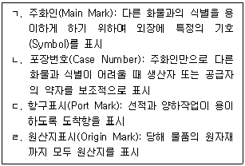
- ㄱ, ㄴ
- ㄱ, ㄷ
- ㄴ, ㄷ
- ㄴ, ㄹ
- ㄷ, ㄹ
(정답률: 알수없음)
29. 정성적 수요예측 기법이 아닌 것은?
- 델파이법
- 시장조사법
- 회귀분석법
- 역사적 유추법
- 패널조사법
(정답률: 알수없음)
30. 다음이 설명하는 파렛트 적재방식은?
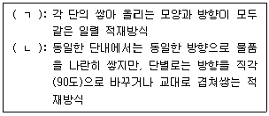
- ㄱ: 블록적재방식, ㄴ: 교대배열적재방식
- ㄱ: 블록적재방식, ㄴ: 벽돌적재방식
- ㄱ: 교대배열적재방식, ㄴ: 스플릿적재방식
- ㄱ: 스플릿적재방식, ㄴ: 벽돌적재방식
- ㄱ: 스플릿적재방식, ㄴ: 교대배열적재방식
(정답률: 알수없음)
31. 하역의 기계화와 표준화를 위해 고려해야 할 사항이 아닌 것은?
- 환경영향을 고려해야 한다.
- 물류합리화의 관점에서 추진되어야 한다.
- 안전성을 고려하여 추진되어야 한다.
- 특정 화주의 화물을 대상으로 추진되어야 한다.
- 생산자, 제조업자, 물류업자와 관련 당사자의 상호협력을 고려하여야 한다.
(정답률: 알수없음)
32. 파렛트 풀(Pallet Pool)에 관한 설명으로 옳지 않은 것은?
- 물류합리화와 물류비 절감이 가능하다.
- 비수기에 불필요한 파렛트 비용을 절감할 수 있다.
- 파렛트 회수관리의 일원화에 어려움이 있다.
- 파렛트 규격의 표준화가 필요하다.
- 지역적, 계절적 수요 변동에 대응이 가능하다.
(정답률: 알수없음)
33. 하역기기 선정 기준으로 옳지 않은 것은?
- 에너지 효율성
- 하역기기의 안전성
- 작업량과 작업 특성
- 하역물품의 원산지
- 취급 품목의 종류
(정답률: 알수없음)
34. 다음이 설명하는 시스템은?
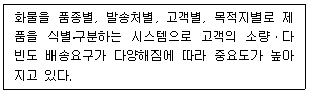
- 운반시스템
- 분류시스템
- 반입시스템
- 반출시스템
- 적재시스템
(정답률: 알수없음)
35. 다음이 설명하는 파렛트 풀 시스템의 운영방식은?
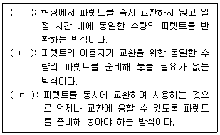
- ㄱ: 대차결제방식, ㄴ: 리스ㆍ렌탈방식, ㄷ: 즉시교환방식
- ㄱ: 대차결제방식, ㄴ: 즉시교환방식, ㄷ: 교환ㆍ리스병용방식
- ㄱ: 리스ㆍ렌탈방식, ㄴ: 교환ㆍ리스병용방식, ㄷ: 대차결제방식
- ㄱ: 리스ㆍ렌탈방식, ㄴ: 대차결제방식, ㄷ: 교환ㆍ리스병용방식
- ㄱ: 교환ㆍ리스병용방식, ㄴ: 리스ㆍ렌탈방식, ㄷ: 즉시교환방식
(정답률: 알수없음)
36. 하역작업과 관련된 용어의 설명으로 옳지 않은 것은?
- 더니지(Dunnage): 운송기기에 실려진 화물이 손상, 파손되지 않도록 밑바닥에 까는 물건을 말한다.
- 래싱(Lashing): 운송기기에 실려진 화물을 줄로 고정시키는 작업을 말한다.
- 스태킹(Stacking): 화물을 보관시설 또는 장소에 쌓는 작업을 말한다.
- 피킹(Picking): 보관 장소에서 화물을 꺼내는 작업을 말한다.
- 배닝(Vanning): 파렛트에 화물을 쌓는 작업을 말한다.
(정답률: 알수없음)
37. 유닛로드 시스템(Unit Load System)에 관한 설명으로 옳지 않은 것은?
- 운송장비, 하역장비의 표준화가 선행되어야 한다.
- 파렛트, 컨테이너를 이용하는 방법이 있다.
- 화물을 일정한 중량 또는 용적으로 단위화하는 시스템을 말한다.
- 하역의 기계화를 통한 하역능력의 향상으로 운송수단의 회전율을 높일 수 있다.
- 파렛트는 시랜드사가 최초로 개발한 단위적재기기이다.
(정답률: 알수없음)
38. 하역장비에 관한 설명으로 옳지 않은 것은?
- 언로우더(Unloader): 철광석, 석탄 및 석회석과 같은 벌크(Bulk) 화물을 하역하는데 사용된다.
- 톱 핸들러(Top Handler): 공(empty) 컨테이너를 적치하는데 사용된다.
- 스트래들 캐리어(Straddle Carrier): 부두의 안벽에 설치되어 선박에 컨테이너를 선적하거나 하역하는데 사용된다.
- 트랜스퍼 크레인(Transfer Crane): 컨테이너를 적재하거나 다른 장소로 이송 및 반출하는데 사용된다.
- 천정 크레인(Overhead Travelling Crane): 크레인 본체가 천장을 주행하며 화물을 상하로 들어 올려 수평 이동하는데 사용된다.
(정답률: 알수없음)
39. 하역합리화의 수평직선 원칙에 해당하는 것은?
- 하역기기를 탄력적으로 운영하여야 한다.
- 운반의 혼잡을 초래하는 요인을 제거하여 하역작업의 톤ㆍ킬로를 최소화하여야 한다.
- 불필요한 물품의 취급을 최소화하여야 한다.
- 하역작업을 표준화하여 효율성을 추구하여야 한다.
- 복잡한 시설과 하역체계를 단순화하여야 한다.
(정답률: 알수없음)
40. 하역에 관한 설명으로 옳은 것은?
- 제품에 대한 형태효용을 창출한다.
- 운반활성화 지수를 최소화해야 한다.
- 적하, 운반, 적재, 반출 및 분류로 구성된다.
- 화물에 대한 제조공정과 검사공정을 포함한다.
- 기계화와 자동화를 통한 하역생산성 향상이 어렵다.
(정답률: 알수없음)
2과목: 물류관련법규
41. 물류정책기본법상 화주의 수요에 따라 유상으로 물류활동을 영위하는 것을 업으로 하는 물류사업으로 명시되지 않은 것은?
- 물류장비의 폐기물을 처리하는 물류서비스업
- 물류터미널을 운영하는 물류시설운영업
- 물류컨설팅의 업무를 하는 물류서비스업
- 파이프라인을 통하여 화물을 운송하는 화물운송업
- 창고를 운영하는 물류시설운영업
(정답률: 알수없음)
42. 물류정책기본법상 물류현황조사에 관한 설명으로 옳지 않은 것은?
- 해양수산부장관은 물류현황조사의 결과에 따라 물류비 등 물류지표를 설정하여 물류정책의 수립 및 평가에 활용할 수 있다.
- 시ㆍ도지사는 지역물류현황조사의 효율적인 수행을 위하여 필요한 경우에는 지역물류현황조사의 일부를 전문기관으로 하여금 수행하게 할 수 있다.
- 시ㆍ도지사는 물류기업 등에게 지역물류현황조사를 요청하는 경우 조례로 정하는 바에 따라 조사지침을 작성ㆍ통보할 수 없고, 국토교통부장관의 물류현황조사지침을 따르도록 해야 한다.
- 국토교통부장관은 물류기업에게 물류현황조사에 필요한 자료의 제출을 요청할 수 있다.
- 지역물류현황조사는「국가통합교통체계효율화법」에 따른 국가교통조사와 중복되지 아니하도록 하여야 한다.
(정답률: 알수없음)
43. 물류정책기본법상 국가물류기본계획에 포함되어야 할 사항으로 명시되지 않은 것은?
- 물류관련 행정소송전략에 관한 사항
- 물류보안에 관한 사항
- 국가물류정보화사업에 관한 사항
- 물류시설ㆍ장비의 수급ㆍ배치 및 투자 우선순위에 관한 사항
- 환경친화적 물류활동의 촉진ㆍ지원에 관한 사항
(정답률: 알수없음)
44. 물류정책기본법상 위험물질운송안전관리센터의 관리대상으로 명시된 위험물질을 모두 고른 것은?
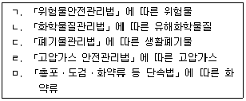
- ㄱ, ㄴ, ㄷ
- ㄱ, ㄴ, ㄹ
- ㄱ, ㄷ, ㅁ
- ㄴ, ㄹ, ㅁ
- ㄷ, ㄹ, ㅁ
(정답률: 알수없음)
45. 물류정책기본법상 국제물류주선업에 관한 설명으로 옳은 것은?
- 국제물류주선업을 경영하려는 자는 국토교통부장관에게 등록하여야 한다.
- 피한정후견인은 국제물류주선업의 등록을 할 수 있다.
- 국제물류주선업자가 사망한 때에는 그 상속인은 국제물류주선업의 등록에 따른 권리ㆍ의무를 승계한다.
- 등록증 대여 등의 금지규정에 위반하여 다른 사람에게 등록증을 대여한 경우에는 시ㆍ도지사는 사업의 전부의 정지를 명할 수 있다.
- 시ㆍ도지사는 국제물류주선업자가 거짓이나 그 밖의 부정한 방법으로 등록을 한 경우에는 사업의 일부의 정지를 명할 수 있다.
(정답률: 알수없음)
46. 물류정책기본법령상 물류신고센터에 관한 설명으로 옳은 것은?
- 물류신고센터는 신고 내용이 명백히 거짓인 경우 접수된 신고를 종결할 수 있으며, 이 경우 종결 사유를 신고자에게 통보할 필요가 없다.
- 물류신고센터의 장은 산업통상자원부장관이 지명하는 사람이 된다.
- 화물운송의 단가를 인하하기 위한 고의적 재입찰 행위로 발생한 분쟁에 대해서는 물류신고센터에 신고할 수 없다.
- 물류신고센터는 신고 내용이 이미 수사나 감사 중에 있다는 이유로 접수된 신고를 종결할 수 없다.
- 물류신고센터가 조정을 권고하는 경우에는 신고의 주요내용, 조정권고 내용, 조정권고에 대한 수락 여부 통보기한, 향후 신고 처리에 관한 사항을 명시하여 서면으로 통지해야 한다.
(정답률: 알수없음)
47. 물류정책기본법령상 환경친화적 물류의 촉진에 관한 설명으로 옳지 않은 것은?
- 환경친화적인 연료를 사용하는 운송수단으로 전환하는 경우는 지원의 대상이 된다.
- 물류기업과 화주기업의 환경친화적 협력체계 구축을 위한 정책과 사업의 개발 및 제안은 녹색물류협의기구의 업무에 해당한다.
- 화물자동차의 배출가스를 저감하기 위한 장비투자를 하는 경우는 지원의 대상이 된다.
- 선박의 배출가스를 저감하기 위한 시설투자를 하는 경우는 지원의 대상이 된다.
- 녹색물류협의기구의 위원장은 국토교통부장관이 임명한다.
(정답률: 알수없음)
48. 물류정책기본법상 물류관련협회에 관한 설명으로 옳지 않은 것은?
- 물류관련협회를 설립하려는 경우에는 해당 협회의 회원이 될 자격이 있는 기업 100개 이상이 발기인으로 정관을 작성하여야 한다.
- 물류관련협회를 설립하려는 경우에는 해당 협회의 회원이 될 자격이 있는 기업 150개 이상이 참여한 창립총회의 의결을 거쳐야 한다.
- 물류관련협회를 설립하려는 경우에는 소관에 따라 국토교통부장관 또는 해양수산부장관의 설립인가를 받아야 한다.
- 물류관련협회는 설립인가를 받아 설립등기를 함으로써 성립한다.
- 물류관련협회는 법인으로 한다.
(정답률: 알수없음)
49. 물류시설의 개발 및 운영에 관한 법령상 용어의 설명으로 옳지 않은 것은?
- 「철도사업법」에 따른 철도사업자가 그 사업에 사용하는 화물운송ㆍ하역 및 보관 시설은 일반물류단지 안에 설치하더라도 일반물류단지시설에 해당하지 않는다.
- 「유통산업발전법」에 따른 공동집배송센터를 경영하는 사업은 물류터미널사업에서 제외된다.
- 「주차장법」에 따른 주차장에서 자동차를 보관하는 사업은 물류창고업에서 제외된다.
- 화물의 집화ㆍ하역과 관련된 가공ㆍ조립 시설의 전체 바닥면적 합계가 물류터미널의 전체 바닥면적 합계의 4분의 1을 넘는 경우에는 물류터미널에 해당하지 않는다.
- 물류단지시설의 운영을 효율적으로 지원하기 위하여 물류단지 안에 설치되는 금융ㆍ보험ㆍ의료 시설은 지원시설에 해당된다.
(정답률: 알수없음)
50. 물류시설의 개발 및 운영에 관한 법률상 복합물류터미널사업의 등록에 관한 설명으로 옳지 않은 것은?
- 「민법」또는「상법」에 따라 설립된 법인은 국토교통부장관에게 등록하여 복합물류터미널사업을 경영할 수 있다.
- 복합물류터미널사업의 등록을 하려면 부지 면적이 10,000제곱미터 이상이어야 한다.
- 복합물류터미널사업의 등록을 하려면 물류시설개발종합계획에 배치되지 않아야 한다.
- 임원 중에 파산선고를 받고 복권되지 아니한 자가 있는 법인은 복합물류터미널사업을 등록할 수 없다.
- 물류시설의 개발 및 운영에 관한 법률을 위반하여 벌금형 이상을 선고받은 후 2년이 지나지 아니한 자는 등록을 할 수 없다.
(정답률: 알수없음)
51. 물류시설의 개발 및 운영에 관한 법령상 물류단지의 개발 및 운영에 관한 설명으로 옳지 않은 것은?
- 국토교통부장관은 노후화된 일반물류터미널 부지 및 인근 지역에 도시첨단물류단지를 지정할 수 있다.
- 시장ㆍ군수ㆍ구청장은 시ㆍ도지사에게 도시첨단물류단지 지정을 신청할 수 있다.
- 국토교통부장관은 물류단지의 개발에 관한 기본지침을 작성하여 관보에 고시하여야 한다.
- 물류단지지정권자는 도시첨단물류단지를 지정한 후 1년 이내에 물류단지 실수요 검증을 실시하여야 한다.
- 도시첨단물류단지 안에서「건축법」에 따른 건축물의 용도변경을 하려는 자는 시장ㆍ군수ㆍ구청장의 허가를 받아야 한다.
(정답률: 알수없음)
52. 물류시설의 개발 및 운영에 관한 법률상 물류창고업의 등록에 관한 설명이다. ( )에 들어갈 숫자를 바르게 나열한 것은?
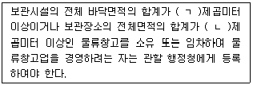
- ㄱ: 500 ㄴ: 2,500
- ㄱ: 1,000 ㄴ: 2,500
- ㄱ: 1,000 ㄴ: 4,500
- ㄱ: 2,000 ㄴ: 2,500
- ㄱ: 2,000 ㄴ: 4,500
(정답률: 알수없음)
53. 물류시설의 개발 및 운영에 관한 법령상 스마트물류센터에 관한 설명으로 옳은 것은?
- 국가 또는 지방자치단체는 스마트물류센터의 구축 및 운영에 필요한 자금의 대출 등으로 인한 금전채무의 보증한도, 보증료 등 보증조건을 우대할 수 있다.
- 스마트물류센터 인증의 유효기간은 인증을 받은 날부터 5년으로 한다.
- 스마트물류센터 인증의 등급은 3등급으로 구분한다.
- 스마트물류센터 예비인증은 본(本)인증에 앞서 건축물 설계에 반영된 내용을 대상으로 한다.
- 스마트물류센터임을 사칭한 자에게는 과태료를 부과한다.
(정답률: 알수없음)
54. 물류시설의 개발 및 운영에 관한 법령상 물류단지개발사업에 관한 설명으로 옳지 않은 것은?
- 「상법」에 따라 설립된 법인이 물류단지개발사업을 시행하는 경우에는 사업대상 토지면적의 3분의 2 이상을 매입하여야 토지등을 수용하거나 사용할 수 있다.
- 물류단지개발사업에 필요한 토지등을 수용하려면 물류단지 지정 고시가 있은 후 「공익사업을 위한 토지 등의 취득 및 보상에 관한 법률」에 따른 사업인정 및 그 고시가 있어야 한다.
- 물류단지개발사업에 필요한 토지등의 수용 재결의 신청은 물류단지개발계획에서 정하는 사업시행기간 내에 할 수 있다.
- 국가 또는 지방자치단체는 물류단지개발사업에 필요한 이주대책사업비의 일부를 보조하거나 융자할 수 있다.
- 물류단지개발사업을 시행하는 지방자치단체는 해당 물류단지의 입주기업체 및 지원기관에게 물류단지개발사업의 일부를 대행하게 할 수 있다.
(정답률: 알수없음)
55. 물류시설의 개발 및 운영에 관한 법령상 물류 교통ㆍ환경 정비지구에서 국가 또는 시ㆍ도지사가 시장ㆍ군수ㆍ구청장에게 행정적ㆍ재정적 지원을 할 수 있는 사업이 아닌 것은?
- 「화학물질관리법」에 따른 유독물 보관ㆍ저장시설의 보수ㆍ개조 또는 개량
- 도로 등 기반시설의 신설ㆍ확장ㆍ개량 및 보수
- 「소음ㆍ진동관리법」에 따른 방음ㆍ방진시설의 설치
- 「화물자동차 운수사업법」에 따른 공영차고지 및 화물자동차 휴게소의 설치
- 「환경친화적 자동차의 개발 및 보급 촉진에 관한 법률」에 따른 전기자동차의 충전시설의 설치ㆍ정비 또는 개량
(정답률: 알수없음)
56. 물류시설의 개발 및 운영에 관한 법령상 물류단지재정비사업에 관한 설명으로 옳지 않은 것은?
- 물류단지의 부분 재정비사업은 지정된 물류단지 면적의 3분의 2 미만을 재정비하는 사업을 말한다.
- 물류단지지정권자는 준공된 날부터 20년이 지나서 물류산업구조의 변화 및 물류시설의 노후화 등으로 물류단지를 재정비할 필요가 있는 경우에는 물류단지재정비사업을 할 수 있다.
- 물류단지의 부분 재정비사업에서는 물류단지재정비계획 고시를 생략할 수 있다.
- 물류단지지정권자는 물류단지재정비시행계획을 승인하려면 미리 입주업체 및 관계 지방자치단체의 장의 의견을 듣고 관계 행정기관의 장과 협의하여야 한다.
- 승인 받은 재정비시행계획에서 사업비의 100분의 10을 넘는 사업비 증감을 하고자 하면 그에 대하여 물류단지지정권자의 승인을 받아야 한다.
(정답률: 알수없음)
57. 화물자동차 운수사업법령상 화물자동차 운송사업의 허가에 관한 설명으로 옳지 않은 것은?
- 30대의 화물자동차를 사용하여 화물을 운송하는 사업을 경영하려는 자는 일반화물 자동차 운송사업의 허가를 받아야 한다.
- 화물자동차 운송사업의 허가에는 조건을 붙일 수 있다.
- 화물자동차 운송사업자가 법인인 경우 대표자를 변경하려면 변경허가를 받아야 한다.
- 화물자동차 운송사업자가 운송약관의 변경명령을 받고 이를 이행하지 아니한 경우 증차를 수반하는 허가사항을 변경할 수 없다.
- 운송사업자가 사업정지처분을 받은 경우에는 주사무소를 이전하는 변경허가를 받을 수 없다.
(정답률: 알수없음)
58. 화물자동차 운수사업법령상 운송약관에 관한 설명으로 옳은 것은?
- 운송약관을 신고할 때에는 신고서에 적재물배상보험계약서를 첨부하여야 한다.
- 운송사업자는 운송약관의 신고를 협회로 하여금 대리하게 할 수 없다.
- 시ㆍ도지사가 화물자동차 운수사업법령에서 정한 기간 내에 신고수리 여부를 신고인에게 통지하지 아니하면 그 기간이 끝난 날에 신고를 수리한 것으로 본다.
- 공정거래위원회는 표준약관을 작성하여 운송사업자에게 그 사용을 권장할 수 있다.
- 운송사업자가 화물자동차운송사업의 허가를 받는 때에 표준약관의 사용에 동의하면 운송약관을 신고한 것으로 본다.
(정답률: 알수없음)
59. 화물자동차 운수사업법령상 운임 및 요금에 관한 설명으로 옳지 않은 것은?
- 운송사업자는 운임과 요금을 정하여 미리 국토교통부장관에게 신고하여야 한다.
- 화물자동차 안전운임의 적용을 받는 화주와 운수사업자는 해당 화물자동차 안전운임을 게시하거나 그 밖에 적당한 방법으로 운수사업자와 화물차주에게 알려야 한다.
- 화주는 운수사업자에게 화물자동차 안전운송운임 이상의 운임을 지급하여야 한다.
- 화물운송계약 중 화물자동차 안전운임에 미치지 못하는 금액을 운임으로 정한 경우 그 부분은 취소하고 새로 계약하여야 한다.
- 화물자동차 운송사업의 운임 및 요금의 신고는 운송사업자로 구성된 협회가 설립한 연합회로 하여금 대리하게 할 수 있다.
(정답률: 알수없음)
60. 화물자동차 운수사업법상 운송사업자의 책임에 관한 설명으로 옳은 것을 모두 고른 것은?
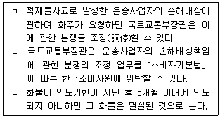
- ㄱ
- ㄷ
- ㄱ, ㄴ
- ㄴ, ㄷ
- ㄱ, ㄴ, ㄷ
(정답률: 알수없음)
61. 화물자동차 운수사업법령상 운송사업자의 준수사항에 관한 설명으로 옳지 않은 것은?
- 운송사업자는 택시 요금미터기의 장착을 하여서는 아니 된다.
- 운송사업자는 화물자동차 운송사업을 양도ㆍ양수하는 경우에 양도ㆍ양수에 소요되는 비용을 위ㆍ수탁차주에게 부담시켜서는 아니 된다.
- 최대적재량 1.5톤을 초과하는 화물자동차를 밤샘주차하는 경우 차고지에서만 하여야 한다.
- 화주로부터 부당한 운임 및 요금의 환급을 요구받았을 때에는 환급하여야 한다.
- 밴형 화물자동차를 사용해서 화주와 화물을 함께 운송하는 사업자는 화물자동차 바깥쪽에 “화물”이라는 표기를 한국어 및 외국어(영어, 중국어 및 일어)로 표시하여야 한다.
(정답률: 알수없음)
62. 화물자동차 운수사업법상 위ㆍ수탁계약의 해지 등에 관한 조문의 일부이다. ( )에 들어갈 숫자를 바르게 나열한 것은?
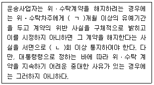
- ㄱ: 1 ㄴ: 1
- ㄱ: 2 ㄴ: 2
- ㄱ: 2 ㄴ: 3
- ㄱ: 3 ㄴ: 2
- ㄱ: 3 ㄴ: 3
(정답률: 알수없음)
63. 화물자동차 운수사업법상 화물자동차 운송주선사업의 허가를 반드시 취소하여야 하는 경우를 모두 고른 것은?
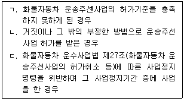
- ㄱ
- ㄷ
- ㄱ, ㄴ
- ㄴ, ㄷ
- ㄱ, ㄴ, ㄷ
(정답률: 알수없음)
64. 화물자동차 운수사업법령상 화물자동차 운송가맹사업에 관한 설명으로 옳지 않은 것은?
- 운송가맹사업자는 주사무소 외의 장소에서 상주하여 영업하려면 허가를 받고 영업소를 설치하여야 한다.
- 화물자동차 운송가맹사업 허가대장은 전자적 처리가 불가능한 특별한 사유가 없으면 전자적 처리가 가능한 방법으로 작성하여 관리하여야 한다.
- 운송사업자 및 위ㆍ수탁차주인 운송가맹점은 화물의 원활한 운송을 위한 차량 위치의 통지를 성실히 이행하여야 한다.
- 시장ㆍ군수ㆍ구청장은 안전운행의 확보, 운송질서의 확립 및 화주의 편의를 도모하기 위하여 필요하다고 인정하면 운송가맹사업자에게 화물자동차의 구조변경 및 운송시설의 개선을 명할 수 있다.
- 허가를 받은 운송가맹사업자가 주사무소를 이전한 경우 변경신고를 하여야 한다.
(정답률: 알수없음)
65. 화물자동차 운수사업법령상 적재물배상보험등에 관한 설명으로 옳은 것은?
- 특수용도형 화물자동차 중「자동차관리법」에 따른 피견인자동차를 소유하고 있는 운송사업자는 적재물배상보험등의 의무가입 대상이다.
- 이사화물을 취급하는 운송주선사업자는 적재물배상보험등의 의무가입 대상이다.
- 적재물배상보험등에 가입하려는 자가 운송사업자인 경우 각 사업자별로 가입하여야 한다.
- 중대한 교통사고로 감차 조치 명령을 받은 경우에도 책임보험계약등을 해제하거나 해지하여서는 아니 된다.
- 적재물배상보험등에 가입하려는 자가 운송주선사업자인 경우 각 화물자동차별로 가입하여야 한다.
(정답률: 알수없음)
66. 화물자동차 운수사업법령상 경영의 위ㆍ수탁에 관한 설명으로 옳은 것은?
- 운송사업자는 필요한 경우 다른 사람에게 차량과 그 경영의 전부를 위탁할 수 있다.
- 위ㆍ수탁계약의 기간은 2년 이상으로 하여야 한다.
- 위ㆍ수탁계약의 내용이 계약불이행에 따른 당사자의 손해배상책임을 과도하게 가중하여 정함으로써 상대방의 정당한 이익을 침해한 경우에는 위ㆍ수탁계약 전부를 무효로 한다.
- 화물운송사업분쟁조정협의회가 위ㆍ수탁계약의 분쟁을 심의한 결과 조정안을 작성하여 분쟁당사자에게 제시하면 분쟁당사자는 이에 따라야 한다.
- 운송사업자가 위ㆍ수탁계약의 갱신 요구를 거절하는 경우에는 그 요구를 받은 날부터 30일 이내에 위ㆍ수탁차주에게 거절 사유를 적어 서면으로 통지하여야 한다.
(정답률: 알수없음)
67. 유통산업발전법상 정의에 관한 설명이다. ( )에 들어갈 내용을 바르게 나열한 것은?
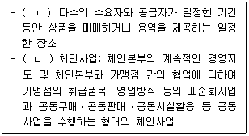
- ㄱ: 상점가 ㄴ: 조합형
- ㄱ: 상점가 ㄴ: 임의가맹점형
- ㄱ: 임시시장 ㄴ: 조합형
- ㄱ: 임시시장 ㄴ: 임의가맹점형
- ㄱ: 임시시장 ㄴ: 프랜차이즈형
(정답률: 알수없음)
68. 유통산업발전법령상 유통산업발전계획에 관한 설명으로 옳은 것은?
- 산업통상자원부장관은 10년마다 유통산업발전기본계획을 수립하여야 한다.
- 유통산업발전기본계획에는 유통산업의 지역별ㆍ종류별 발전방안이 포함되지 않아도 된다.
- 시ㆍ도지사는 유통산업발전기본계획에 따라 2년마다 유통산업발전시행계획을 수립하여야 한다.
- 시ㆍ도지사는 유통산업발전시행계획의 집행실적을 다음 연도 1월 말일까지 산업통상자원부장관에게 제출하여야 한다.
- 지역별 유통산업발전시행계획은 유통전문인력ㆍ부지 및 시설 등의 수급방안을 포함하여야 한다.
(정답률: 알수없음)
69. 유통산업발전법령상 대규모점포등의 관리규정에 관한 설명으로 옳은 것을 모두 고른 것은?
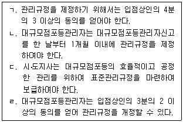
- ㄱ, ㄴ
- ㄱ, ㄷ
- ㄴ, ㄷ
- ㄴ, ㄹ
- ㄷ, ㄹ
(정답률: 알수없음)
70. 유통산업발전법상 유통산업의 경쟁력 강화에 관한 설명으로 옳은 것을 모두 고른 것은?
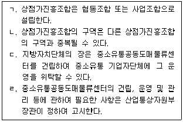
- ㄱ, ㄷ
- ㄴ, ㄷ
- ㄴ, ㄹ
- ㄱ, ㄴ, ㄹ
- ㄱ, ㄷ, ㄹ
(정답률: 알수없음)
71. 유통산업발전법령상 공동집배송센터에 관한 설명으로 옳은 것은?
- 상업지역 내에서 부지면적이 1만제곱미터이고, 집배송시설면적이 5천제곱미터인 지역 및 시설물은 공동집배송센터로 지정할 수 있다.
- 공동집배송센터의 지정을 받은 날부터 정당한 사유 없이 3년 이내에 시공을 하지 아니하는 경우 산업통상자원부장관은 그 지정을 취소할 수 있다.
- 공동집배송센터를 신탁개발하는 경우 신탁계약을 체결한 신탁업자는 공동집배송센터사업자의 지위를 승계하지 않는다.
- 관계 중앙행정기관의 장은 집배송시설의 효율적 배치를 위하여 공동집배송센터 개발촉진지구의 지정을 산업통상자원부장관에게 요청할 수 있다.
- 공동집배송센터 개발촉진지구의 집배송시설에 대하여는 시ㆍ도지사가 공동집배송센터로 지정할 수 있다.
(정답률: 알수없음)
72. 항만운송사업법령상 항만운송의 유형으로 분류할 수 없는 것은?
- 선적화물을 실을 때 그 화물의 개수를 계산하는 일
- 통선(通船)으로 본선과 육지 간의 연락을 중계하는 행위
- 항만에서 선박 또는 부선(艀船)을 이용하여 운송될 화물을 하역장[수면(水面) 목재 저장소는 제외]에서 내가는 행위
- 선박을 이용하여 운송될 화물을 화물주의 위탁을 받아 항만에서 화물주로부터 인수하는 행위
- 선적화물 및 선박에 관련된 증명ㆍ조사ㆍ감정을 하는 일
(정답률: 알수없음)
73. 항만운송사업법상 등록 또는 신고에 관한 설명으로 옳지 않은 것은?
- 항만운송관련사업 중 선용품공급업은 신고대상이다.
- 항만하역사업과 검수사업의 등록은 항만별로 한다.
- 한정하역사업에 대하여 관리청은 이용자ㆍ취급화물 또는 항만시설의 특성을 고려하여 그 등록기준을 완화할 수 있다.
- 선박연료공급업을 등록한 자가 사용 장비를 추가하려는 경우에는 사업계획 변경신고를 하지 않아도 된다.
- 등록한 항만운송사업자가 그 사업을 양도한 경우 양수인은 등록에 따른 권리ㆍ의무를 승계한다.
(정답률: 알수없음)
74. 항만운송사업법령상 감정사업의 등록을 한 자가 요금의 변경신고를 할 경우 제출 서류에 기재하여야 하는 사항을 모두 고른 것은?
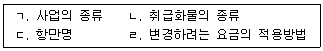
- ㄱ, ㄴ
- ㄷ, ㄹ
- ㄱ, ㄴ, ㄹ
- ㄴ, ㄷ, ㄹ
- ㄱ, ㄴ, ㄷ, ㄹ
(정답률: 알수없음)
75. 철도사업법령상 철도사업약관 및 사업계획에 관한 설명으로 옳은 것은?
- 철도사업자는 철도사업약관을 정하여 국토교통부장관의 허가를 받아야 한다.
- 국토교통부장관은 철도사업약관의 변경신고를 받은 날부터 10일 이내에 신고수리여부를 신고인에게 통지하여야 한다.
- 철도사업자는 여객열차의 운행구간을 변경하려는 경우 국토교통부장관의 인가를 받아야 한다.
- 철도사업자는 사업용철도노선별로 여객열차의 정차역의 10분의 2를 변경하는 경우 국토교통부장관에게 신고하여야 한다.
- 철도사업자가 사업계획 중 인가사항을 변경하려는 경우에는 사업계획을 변경하려는 날 1개월 전까지 사업계획변경인가신청서를 제출하여야 한다.
(정답률: 알수없음)
76. 철도사업법령상 과징금에 관한 설명으로 옳지 않은 것은?
- 징수한 과징금은 철도사업 종사자의 양성을 위한 시설 운영의 용도로 사용할 수 있다.
- 과징금 부과처분을 받은 자가 납부기한까지 과징금을 내지 아니하면 국세 체납처분의 예에 따라 징수한다.
- 과징금은 철도사업자의 신청에 따라 분할하여 납부할 수 있다.
- 하나의 위반행위에 대하여 사업정지처분과 과징금처분을 함께 부과할 수 없다.
- 국토교통부장관은 과징금으로 징수한 금액의 운용계획을 수립하여 시행하여야 한다.
(정답률: 알수없음)
77. 철도사업법상 철도사업자에 관한 설명으로 옳지 않은 것은?
- 철도사업자는 여객에 대한 운임을 변경하려는 경우 국토교통부장관에게 신고하여야 한다.
- 철도사업자는 철도사업을 양도ㆍ양수하려는 경우에는 국토교통부장관의 인가를 받아야 한다.
- 철도사업자가 국토교통부장관의 허가를 받아 그 사업의 전부 또는 일부를 휴업하는 경우 휴업기간은 6개월을 넘을 수 없다.
- 철도사업자의 화물의 멸실ㆍ훼손에 대한 손해배상책임에 관하여는「상법」제135조(손해배상책임)를 준용하지 않는다.
- 철도사업자는 타인에게 자기의 성명 또는 상호를 사용하여 철도사업을 경영하게 하여서는 아니 된다.
(정답률: 알수없음)
78. 철도사업법령상 전용철도에 관한 설명이다. ( )에 들어갈 내용을 바르게 나열한 것은?
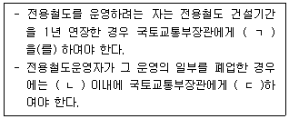
- ㄱ: 신고 ㄴ: 15일 ㄷ: 등록
- ㄱ: 신고 ㄴ: 1개월 ㄷ: 등록
- ㄱ: 등록 ㄴ: 15일 ㄷ: 신고
- ㄱ: 등록 ㄴ: 1개월 ㄷ: 신고
- ㄱ: 등록 ㄴ: 3개월 ㄷ: 신고
(정답률: 알수없음)
79. 농수산물 유통 및 가격안정에 관한 법령상 농수산물도매시장의 개설ㆍ폐쇄에 관한 설명으로 옳지 않은 것은?
- 시가 지방도매시장을 개설하려면 도지사에게 신고하여야 한다.
- 특별시ㆍ광역시ㆍ특별자치시 및 특별자치도가 도매시장을 폐쇄하는 경우 그 3개월 전에 이를 공고하여야 한다.
- 특별시ㆍ광역시ㆍ특별자치시 또는 특별자치도가 도매시장을 개설하려면 미리 업무규정과 운영관리계획서를 작성하여야 한다.
- 도매시장은 양곡부류ㆍ청과부류ㆍ축산부류ㆍ수산부류ㆍ화훼부류 및 약용작물 부류별로 개설하거나 둘 이상의 부류를 종합하여 개설한다.
- 도매시장의 명칭에는 그 도매시장을 개설한 지방자치단체의 명칭이 포함되어야 한다.
(정답률: 알수없음)
80. 농수산물 유통 및 가격안정에 관한 법령상 농수산물공판장에 관한 설명으로 옳지 않은 것은?
- 농림수협등, 생산자단체 또는 공익법인이 공판장을 개설하려면 시ㆍ도지사의 승인을 받아야 한다.
- 공판장에는 중도매인, 매매참가인, 산지유통인 및 경매사를 둘 수 있다.
- 공판장의 경매사는 공판장의 개설자가 임면한다.
- 공판장의 중도매인은 공판장의 개설자가 지정한다.
- 공익법인이 운영하는 공판장의 개설승인 신청서에는 해당 공판장의 소재지를 관할하는 시장 또는 자치구의 구청장의 의견서를 첨부하여야 한다.
(정답률: 알수없음)